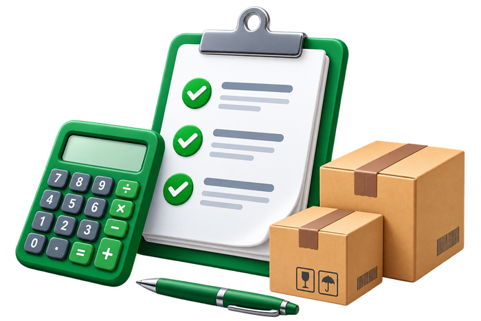

Rincian Pemesanan (Rp)
Halawa Bintang Utama
–
–
Mau buat nota apa hari ini?
Pilih jenis pesanan untuk mulai mengisi.

Aksi cepat
Data otomatis terisi dari pesanan baru & otomatis hilang kalau pesanannya dihapus.
Dihitung dari pesanan yang PERNAH 100% Lunas. Pesanan yang belum Lunas tetap dicatat tapi tidak ikut dihitung ke pola.
📈 Riwayat Pembelian
Qty per Order
Jarak Antar Order (hari)
Kumulatif Qty
🟠 Segera Perlu Dihubungi
Rincian Pemesanan
| No | Deskripsi | Qty | Harga | Diskon | Satuan | Total |
|---|
Keranjang
Total Qty–
Total Berat–
Nota
Subtotal Produk–
Ongkir–
Diskon Ongkir (subsidi)–
Grand Total–
Kurang bayar–
Harga per Sachet–
Harga per Renteng–
Harga per Pack–
Harga per Karton–
Ongkir dibayar–
Rincian Pemesanan (Custom)
| No | Deskripsi | Qty | Harga | Diskon | Satuan | Total |
|---|
Keranjang
Total Qty–
Total Berat–
Di sheet Custom: kolom Diskon diisi manual per baris (bukan otomatis), tidak ada aturan minimum 10 kg untuk IDTruck, dan subsidi ongkir tidak otomatis (isi manual). Ini sesuai struktur asli filenya.
Nota
Subtotal Produk–
Ongkir–
Diskon Ongkir (manual)
Grand Total–
Kurang bayar–
Diskon produk (total nilai)–
Master Data
Kuota AI Hari Ini
Sisa jatah gratis Groq & Cloudflare Workers AI untuk tanggal berjalan (reset otomatis tiap hari) — sekedar info, tidak mengubah apa pun.
Status Infrastruktur
Status koneksi GitHub, Bot Telegram, Cron, dan tier AI (Groq/Mistral/Workers AI) — dimuat otomatis, sekedar info, tidak mengubah apa pun.
Ringkasan Invoice Hari Ini
Invoice Menggantung
Belum lunas/terverifikasi lebih dari 48 jam sejak dikirim ke grup.
Tren Kuota AI (7 Hari Terakhir)
Riwayat master-data.json
Retensi Data Invoice
Daftar produk
5 produk pertama (lihat urutan di bawah) otomatis jadi pilihan di tab Penjualan (Grosir); sisanya tersedia di tab Custom. Geser ikon ⠿ atau pakai tombol ▲▼ untuk mengubah urutan.
Nama produkKode SingkatHargaBerat (kg)Satuan
Ubah diskon tier, subsidi ongkir & link gambar per produk lewat ikon 🖼️ "Detail" di setiap baris — hanya bisa saat Mode Edit aktif.
Daftar ekspedisi
Ketuk ikon 🧮 di tiap baris untuk atur rumus pembulatan berat, minimum charge & skema subsidi ongkir khusus ekspedisi itu.
Daftar Logistik
Begitu Finance klik tombol Konfirmasi di bukti transfer grup, bot otomatis DM ringkasan pesanan (customer, CS, Qty, Berat, ekspedisi) ke semua orang di daftar ini — bukan per-ekspedisi, cukup 1 daftar utama. Isi Telegram ID numerik (bukan username), bisa didapat lewat bot seperti @userinfobot. Boleh isi lebih dari 1 orang.
⚠️ Peringatan Logistik: Resi Belum Ada
Tiap hari, cek pesanan yang SUDAH Lunas 2+ hari lalu tapi belum ada satu pun resi tercatat atas nama customer itu — dikirim ke semua orang di Daftar Logistik di atas. Kalau tidak ada yang perlu diperingatkan hari itu, tidak ada pesan terkirim.
Ambang cross-check resi vs ongkir
Dipakai KHUSUS untuk tampilan on-demand
/ongkir//resi di DM: bot membandingkan Grand
Total Rincian Pemesanan terakhir customer itu dengan nominal resi ekspedisi yang sama, dan menandai selisihnya
kalau melewati persentase di bawah ini. Sekedar catatan teks di DM, tidak pernah mengubah/memblokir apa pun.
Catatan: reaksi 👍/🤔 otomatis di foto resi grup (lihat kartu di bawah) SEKARANG murni soal kualitas baca
nominal AI, TIDAK lagi memakai ambang ini — ambang ini cuma berlaku buat tampilan DM di atas.
Reaksi otomatis foto resi (nominal)
Aktifkan reaksi otomatis di foto resi
Aktif = SETIAP foto resi yang masuk grup resi langsung dapat reaksi 👍 (nominal berhasil dibaca AI dengan yakin) atau 🤔 (tidak yakin/gagal terbaca) — TIDAK perlu menunggu nama atau ekspedisi ketahuan dulu (nama sekarang murni dipakai buat isi caption, bukan penentu reaksi). Kalau ternyata foto sama kekirim dobel, reaksinya ditimpa jadi 😱. Nonaktif = bot balik ke perilaku lama, murni mencatat riwayat tanpa reaksi sama sekali — catatan riwayat resi & cross-check on-demand lewat
/ongkir//resi di DM tetap jalan seperti biasa.Teguran foto resi tanpa nama
Kirim balasan otomatis di grup resi
Aktif (default) = tiap foto resi masuk tanpa nama customer yang bisa dikenali, bot langsung reply foto itu minta nama ditambahkan di caption/pesan terpisah. Nonaktif = bot tidak membalas apa-apa di grup, TAPI foto tetap masuk antrian dan tetap bisa dicek/diisi lewat
/resipending//resiisi di DM seperti biasa.Hapus data via kode
Produk & ekspedisi HANYA bisa dihapus dari sini. Klik badge kode di tab
Produk/Ekspedisi untuk menyalinnya, tempel di kolom ini, lalu cari. Data yang
sudah terpakai di pesanan berjalan tidak otomatis ikut terhapus dari situ.
Menu "Rekap Pesanan"
Aktifkan menu "Rekap Pesanan" di sidebar
Tabel rekap 7 hari terakhir (nama customer, CS, varian produk, status, ekspedisi, resi) — cuma tampil di versi desktop, di atas menu Kalkulator. Nonaktif = menunya disembunyikan sepenuhnya dari sidebar.
Tampilkan berapa hari terakhir?
1-25 hari (25 = batas maksimal, sama dengan lama data pesanan tersimpan). Data yang sudah dihapus/kedaluwarsa tidak akan pernah muncul lagi walau angkanya dinaikkan.
Menu "Follow Up"
Aktifkan menu "Follow Up" di sidebar
Pola repeat-order per customer (rata-rata jarak antar order, prediksi order berikutnya, siapa yang perlu segera dihubungi) — dihitung dari pesanan yang PERNAH 100% Lunas, disimpan permanen (tidak ikut kadaluarsa 25 hari seperti Rekap Pesanan). Pesanan yang belum Lunas tetap dicatat sebagai riwayat tapi tidak ikut dihitung ke pola. Ditaruh di sidebar tepat di bawah menu Rekap Pesanan.
Mode Gelap
Aktifkan Mode Gelap
Tiap user atur sendiri (Terang/Gelap/Sesuai perangkat) lewat tombol bulat di pojok kanan atas — pengaturannya tersimpan per HP/browser, tidak disamakan ke semua orang. Nonaktif = tombolnya disembunyikan, app selalu terang.
Tema Warna "Custom"
Tema biru untuk alur Custom
Aktif = tombol, border, dan aksen di seluruh alur input Custom (Tambah produk, Pengiriman, Review) jadi biru — senada warna ikon tombol "Custom" di Beranda. Nonaktif = balik hijau, sama seperti Penjualan (Grosir). Tab Penjualan (Grosir) sendiri tidak pernah ikut berubah.
Info Footer (Rekening & Masa Berlaku)
Tampilkan info footer
Blok "PT. Halawa Bintang Utama", nomor rekening (BCA/BSI/Muamalat), dan "Daftar rincian pemesanan ini berlaku sampai ..." di bagian bawah halaman. Nonaktif = blok ini disembunyikan. Footer "Habit · versi · Cek Pembaruan · ID Telegram Saya" di bawahnya tidak ikut berubah, selalu tampil seperti biasa.
📦 Info Resi Kemarin ke CS
Tiap pagi, tiap CS dapat DM daftar customer MILIKNYA SENDIRI yang resinya sudah di-upload oleh Daftar Logistik kemarin — biar CS tahu tanpa perlu tanya manual. Kalau kemarin tidak ada resi dari Logistik sama sekali, tidak ada DM terkirim.
📦 Notifikasi "Siap Diproses" ke Logistik
Begitu Finance klik "Konfirmasi" (bukan Hoax/Deposit/Void), pesan "Pesanan sudah di-ACC Finance, siap diproses" otomatis terkirim ke SEMUA kontak di Daftar Logistik — sekali per pesanan. Matikan kalau tim Logistik sudah punya cara lain memantau pesanan siap kirim, dan tidak perlu notifikasi terpisah ini lagi.
⏰ Peringatan Bukti Transfer Belum Ada
Pesanan yang sudah dibuat lebih dari 7 hari tapi belum ada satu pun bukti transfer yang masuk, dikirim SEKALI sebagai DM pengingat ke CS pembuat pesanan itu (bukan ke grup). Jam kirim di sini cuma menentukan JAM PALING CEPAT pesan boleh terkirim hari itu — kalau pesanan baru lewat 7 hari setelah jam ini, pesan tetap menunggu sampai jam ini besoknya, bukan langsung terkirim saat itu juga.
Tombol Simpan/Batal (form Tambah/Edit produk)
Tombol mengambang (sticky)
Aktif = tombol Simpan/Batal selalu terlihat di bawah layar, tidak perlu scroll cari-cari. Nonaktif = kembali ke perilaku lama, tombol diam di tempat ikut kescroll bersama form.
Autocomplete (cari-ketik)
Aktif = field bisa diketik untuk mencari. Nonaktif = kembali jadi pilihan dropdown biasa.
Autocomplete Produk
Field pilih produk di langkah Input Penjualan
Autocomplete Ekspedisi
Field pilih ekspedisi di langkah Pengiriman
Tombol Bantuan
Link tujuan tombol "Bantuan" di pojok kanan atas Beranda (mis. link WhatsApp, Telegram, atau halaman FAQ).
Bot Telegram
Aktifkan Bot Telegram
Bagian "& Kirim" di tombol Salin (toolbar & Review) — matikan untuk sembunyikan, tombol tetap ada tapi cuma "Salin"
Tempel Pesanan (AI)
Aktifkan Tempel Pesanan (AI)
Tombol "📋 Tempel Pesanan" di toolbar & wizard Input Penjualan — matikan untuk sembunyikan
Batas tier diskon Grosir
Tab Penjualan (Grosir) otomatis memilih tier diskon berdasarkan
total jumlah karton dalam satu pesanan (dijumlah dari semua produk).
Angka diskon & subsidi ongkir tiap tier tetap diatur per produk lewat
ikon 🖼️ "Detail" di tab Produk — di sini cuma atur BATAS jumlahnya.
Rumus lain yang bisa diatur
Aturan pembulatan berat, minimum charge (kg), dan skema subsidi ongkir khusus
diatur per ekspedisi — buka tab 🚚 Ekspedisi, lalu ketuk ikon 🧮 di baris ekspedisi yang mau diubah.
Isi per Karton (dipakai untuk pecahan harga per Sachet/Renteng/Pack di ringkasan Penjualan)
diatur per produk — buka tab 📦 Produk, lalu ketuk ikon 🖼️ Detail di baris produk yang mau diubah.
Catatan: label tier "Reseller/Grosir" di rujukan lama file ini sudah tidak aktif sejak filenya dibuat
(selalu "Reseller" apa pun jumlah pesanannya) — bukan bug baru, sengaja direplikasi apa adanya.
Ubah PIN
Kalau PIN lupa, gunakan tombol "Lupa PIN?" di layar buka Master Data — otomatis kembali ke PIN bawaan (hubungi pengelola sistem kalau tidak tahu PIN bawaannya).
Daftar Finance
Orang yang balasan/reaksinya di grup Telegram (ke foto Rincian Pemesanan atau bukti transfer) dianggap sistem sebagai konfirmasi pembayaran resmi — dicatat waktunya untuk audit. Isi Telegram ID numerik masing-masing (bukan username), bisa didapat lewat bot seperti @userinfobot.
Tempel link gambar tanda tangan (bukan unggah file) — dipakai otomatis saat Finance ini dipilih di popup Kwitansi. Bisa dikosongkan dulu lalu diisi/diubah belakangan lewat kolom di tiap baris daftar di bawah.
Rekap Invoice Harian Otomatis (DM ke CS & Finance)
Kirim otomatis terjadwal
Aktif: bot kirim DM rekap invoice harian otomatis sesuai jadwal (default Senin-Kamis 15.30, Jumat 14.30, Sabtu 11.30 WIB, bisa diatur per-orang lewat "/aturjadwal" di DM bot). Nonaktif: kirim otomatis dimatikan — tapi CS/Finance TETAP bisa minta manual kapan saja lewat DM bot, cukup ketik "rekap"/"hasil"/"laporan"/"lapor"/"data".
Cocok Otomatis Bukti Transfer (DM Bot)
Aktifkan pencocokan otomatis
CS kirim bukti transfer ke chat pribadi bot → bot cocokkan ke pesanan pending by nominal & posting otomatis ke grup. Nonaktif = bot diam kalau ada foto masuk ke DM (CS tetap bisa pakai cara lama: reply foto ke pesan Rincian Pemesanan di grup).
Isi Nama Otomatis (Foto Tanpa Caption)
Aktifkan hapus & kirim ulang otomatis
Foto bukti transfer TANPA caption yang di-reply ke Rincian Pemesanan di grup dihapus lalu dikirim ulang bot dengan caption = nama customer. Nonaktif = foto tanpa caption dibiarkan APA ADANYA total (tidak dihapus/repost, tidak dibaca vision, tidak dapat reaction ✅/⚠️) — dan baris "Total: Rp..." di caption Rincian Pemesanan ikut disembunyikan. Foto yang SUDAH ada caption sendiri tidak terpengaruh toggle ini.
Tampilkan Nominal di Caption Bukti Transfer
Tambahkan baris nominal
Berlaku saat bot hapus & kirim ulang foto bukti transfer tanpa caption (lihat toggle "Isi Nama Otomatis" di atas) — caption jadi 2 baris, contoh: "Fulan" lalu "BUKTI TRANSFER: Rp 737.000". Nonaktif = caption cuma nama seperti biasa. Kalau nominalnya tidak kebaca vision, baris ini tetap dilewati apapun nilai toggle ini.
Tombol Cepat Finance (Konfirmasi/Hoax/Deposit/Void)
Tampilkan tombol stiker cepat
Muncul otomatis di bawah tiap bukti transfer di grup — Finance tap, bot balas stiker. Nonaktif = pesan tombol ini tidak dikirim sama sekali (proses pelacakan pembayaran tetap jalan normal).
Tombolnya sekarang cuma tampil 1 (⚡), Finance ketuk dulu baru muncul pilihan reaksi di bawah — grup jadi tidak berantakan. Atur reaksi mana yang mau dipakai:
✅ Konfirmasi
🚫 Hoax
💰 Deposit
🗑️ Void
Label tombol sebelum dibuka:
Master Nama Pelanggan
Daftar nama yang muncul sebagai rekomendasi otomatis di field "Nama Customer" (popup Kirim ke Grup Telegram). Mengganti/menghapus nama di sini HANYA mengubah daftar rekomendasi ini — Rincian Pemesanan, riwayat ongkir, dan riwayat resi yang sudah terkirim sebelumnya tidak ikut berubah. Daftar ini permanen (tidak pernah terhapus otomatis oleh sistem manapun) — hapus di sini kalau memang perlu dibersihkan manual (mis. salah ketik/duplikat).
Detail produk
Tempel link gambar dari internet (bukan unggah file) supaya tidak menghabiskan penyimpanan. Kalau dikosongkan, tampil gambar kardus polos.
Pisahkan pakai koma. Istilah lain yang customer sering pakai untuk produk ini di chat pesanan — makin lengkap, makin akurat AI mencocokkannya. Kosongkan kalau tidak perlu.
Sachet
Renteng
Pack
Dipakai untuk baris "Harga per Sachet/Renteng/Pack" di ringkasan Penjualan. Isi 0 kalau produk ini tidak punya satuan tersebut (mis. produk Pack biasanya tidak punya sachet/renteng).
Referensi ongkir per wilayah (Rp / kg) — klik untuk isi otomatis rate ongkir
Tabel ini murni referensi manual di file asli (tidak terhubung ke formula apa pun) — sama seperti di Excel, hanya membantu isi kolom rate ongkir.
🧾 Kwitansi
Isi data pembayaran, lalu unduh kwitansinya sebagai gambar — tata letaknya mengikuti kwitansi yang biasa dipakai.
Kekurangan (otomatis): Rp 0
Pilih dari Daftar Finance (Master Data → Finance) — tanda tangannya otomatis terpakai sesuai link yang diisi di sana.
Belum ada